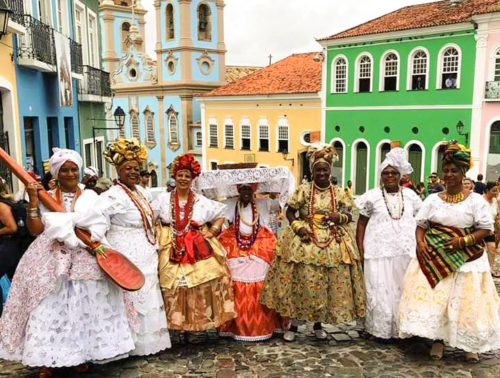
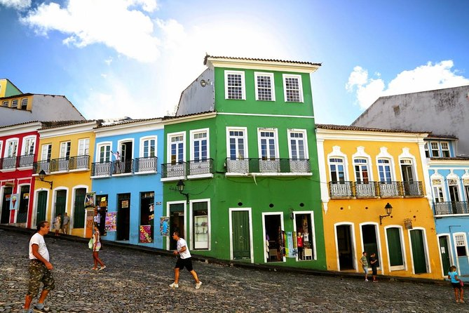

Últimas postagens
Bahia, a cidade da cultura


A bahia é muito conhecida por ser rica em cultura, que envolve dança,religião,música e a gastronomia.
As danças são uma forte expressão cultural, sendo bem animadas e vibrantes. Possuem uma forte influência africana e índigena, elaborando movimentos
que representa a hítoria e etnia.
Algumas dessas famosas danças são:
-
Baião:
Um dos ritmos mais conhecidos da região, a composição é feita por instrumentos como a flauta doce, viola caipira, sanfona e triângulo.
Essa dança contagiante, saiu do Nordeste e conquistou o Brasil todo.
-
Samba de roda:
Trata-se de uma mistura de capoeira e culto aos orixás, traz elementos marcantes da cultura da Angola e os unindo com elementos
musicais portugueses.
>Maculelê:
Uma das danças